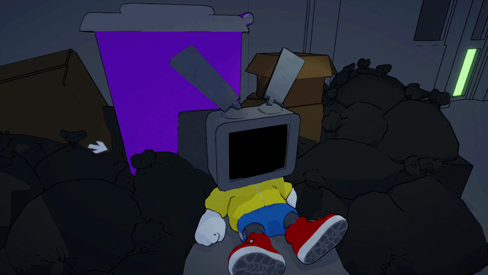
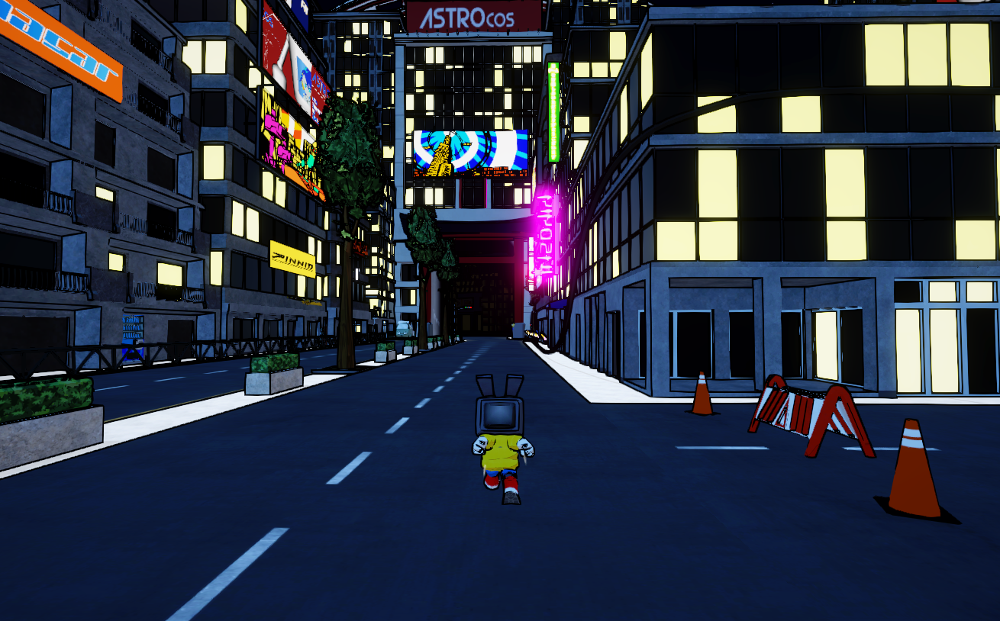
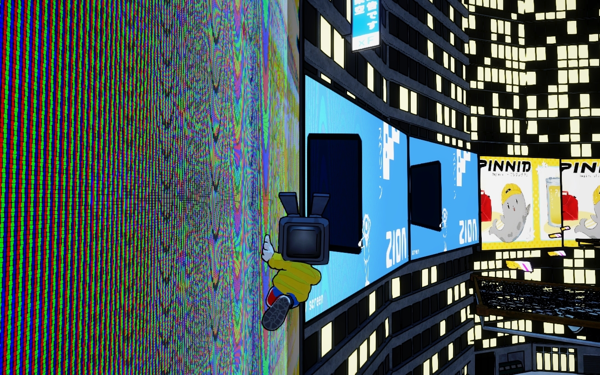

Le jeu
TomoTomo est un jeu de plateforme 3D dans un monde semi-ouvert, avec une esthétique japonaise des années 2000. Vous incarnez Tomo, un petit robot attachant qui se réveille sans aucun souvenir.
Parcourez librement les rues et les toits de Yōhōbakoto — collectez des batteries, débloquez vos améliorations de RAM, restaurez vos capacités perdues, tout en gardant une longueur d'avance sur les unités de patrouille de la ville.
Aperçu



Dans les coulisses
Ma contribution · Making-of · En construction
L'histoire
Vous êtes Tomo — un petit robot attachant qui se réveille sans aucun souvenir. Après un incident, vous vous retrouvez au pied de Yōhōbakoto City. Un labyrinthe urbain vibrant, dense, bourdonnant d'enseignes au néon et de ruelles surpeuplées.
Mais cette ville cache une vérité plus sombre. Ses habitants ne quittent jamais leur domicile — ils envoient des robots à leur place, des proxies contrôlés par la puissante corporation ASTROC0S. Une ville entière qui a échangé sa liberté contre le confort, sans jamais s'en rendre compte.
Vous, vous n'êtes pas l'un de ces robots. Vous n'avez ni propriétaire, ni signal, ni autorisation. La police est déjà à vos trousses. Quelque part au cœur de la ville s'élève le siège de ASTROC0S. La réponse à votre passé se trouve à l'intérieur.
Suivre le projet
Réseaux · Mises à jour · Devlogs